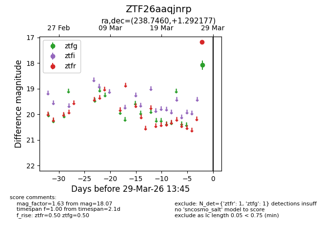
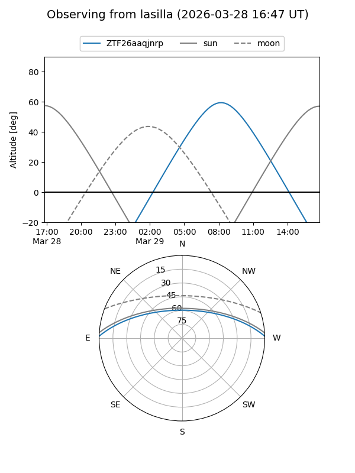
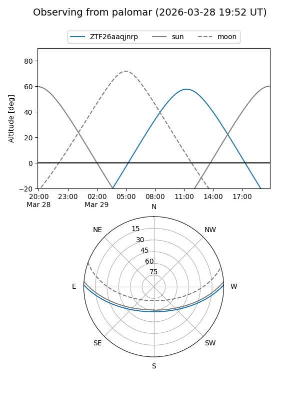

ZTF26aaqjnrp
Target ZTF26aaqjnrp at 2026-03-29 13:48
Aliases and brokers:
FINK: link
Lasair: link
ALeRCE: link
alt names
ZTF26aaqjnrp (ztf,fink_ztf)
Coordinates:
equatorial (ra, dec) = 238.7460,+1.29218
equatorial (HMS+DMS) = 15:54:59.04,+01:17:31.84
galactic (l, b) = (10.4362,+39.02282)
Flags:
Photometry:
last ztfg=18.07, ztfr=17.17
1 ztfg, 1 ztfr detections
Lightcurve

Visibility


Additional plots